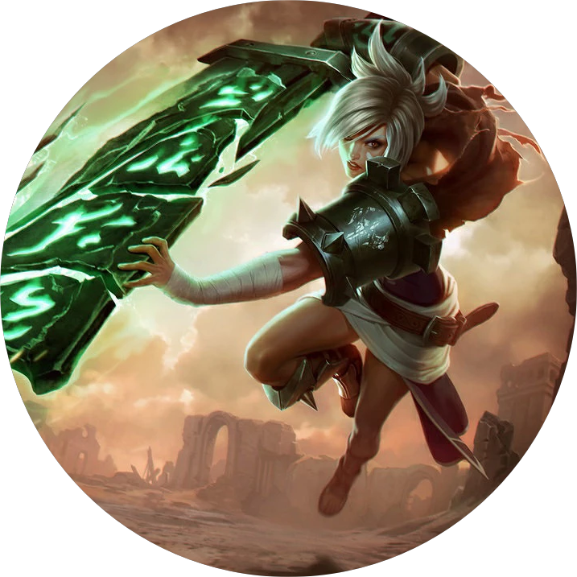

断剑的自白：第一幕
作者：Ariel Lawrence
犁头的铧刃割开地表的硬土，在春季的天空下翻开了大地冬日的私藏。锐雯扶着犁架，跟在耕牛身后走在一小片农地上。她一边专心地握着前梁把手，一边生涩地念叨着陌生的词汇。
“伊麦。伊呗。瓦沙。阿那。”
锐雯紧握着木柄向前走。每走一步，空气里便漫起一阵初醒沃土的芬芳。这几天里，粗糙的握柄磨出了她手上陈年的老茧，也唤醒了飞逝的回忆。
锐雯咬了下嘴唇，撇开刚才的念头，继续干活。“母亲。父亲。姐妹。兄弟。”
瘦牛翻了翻耳朵，拖着犁往前一带。犁头溅起几块碎石磕到了锐雯，但她浑然不觉。她穿着一件粗布衫，沾满泥点的袖子挽起来卷成了一大捆。相同质地的裤子已经被染成了土黄色。改短的裤脚对于原来的主人来说已经太短，但在她身上刚好扫过脚踝，碰到裹满泥巴的鞋面。
“伊麦，伊呗，瓦沙，阿那。”锐雯一遍遍重复着这段颂文，铭记着每一个词。“伊扎，儿子。黛达……”
她用衣袖抹开了眉梢上一缕汗津津的头发，没有慢下脚步。她的手臂很有力，单手就可以扶稳犁架。老农夫回家取水袋和午饭了。他说她可以在田边的林荫歇着等他，不过锐雯执意要把活干完。
一股清风打在她汗湿的后颈上，她环顾四周。诺克萨斯帝国曾试图强迫艾欧尼亚屈服，但艾欧尼亚宁死不从，诺克萨斯便转而想要摧毁它。锐雯继续推着犁架冥想。纵使帝国动员起全部力量，也无法阻止春天重归这片土地。诺克萨斯已经被赶出境一年多了，灰蒙蒙的雨雾和暗沉沉的泥土中终于萌发出了星点翠绿。空气里也似乎蕴藏着新的开始。希望。锐雯轻叹一口气，胡乱剪短的头发轻轻拂过她的下巴。
“黛达。女儿，”她开始了又一轮念诵，语气坚决。她再次用双手扶好犁架。 “伊麦，伊呗。”
“是因呗，”密林的阴影里传出一个声音。
锐雯猛然停步。手中的犁柄一顿，皮缰绳勒住了瘦骨嶙峋的耕牛。犁头撞到了一块土坷，铧刃被石头一别，一声闷响。
这不是老农的声音。
锐雯尽力控制住自己的呼吸，唇间长吁了一口气。虽然只是一个声音，但肯定不是为了说句话而已。常年的训练告诉她的身体要进入防御姿态，但她竭力抑制着这种冲动。她身体没有动弹，继续面向前方的犁架和牲口。锐雯觉得太轻了。她紧紧握住犁柄。原本的傍身之物很重，让她安稳。但现在，她只能隐约感觉到右侧腰间的小刀。这把勾刀不长，切露水苹果和硬质蔬菜还行，派不上其他用处。
“该读作因呗。”
棕黄色的针叶密林与农田的交界处，现出了说话人的身影。
“尾音不同，”那人一边说一边向前走。乱糟糟的黑发从他的脸庞边缘向后抛撒。一件织布披风掖在肩上。锐雯注意到，披风隐约露出了他左肩上的金属护肩，也没有遮住他身边无鞘的剑。他是一个武士，但并不效命于某个家族或辖区。一个浪人。
危险人物，她断定。
“因呗，”他又说了一遍。
锐雯一言不发，并非因为无言以对，而是因为她清楚自己说话带着什么口音。她绕过铧犁，用它挡在自己和这位口音纯正的陌生人之间。她将一缕头发别到耳后，弯下腰查看铧刃，假装关心土里的石头。用来切割草根和土块的铧刃，应该会比那把小刀更有用。那天早晨她看到过老伯怎么安装木架，所以也知道怎么卸下来。
“我上次来的时候，不记得见过你，但我也离开有些时日了，”这个人说道。他的声音冷冷的，透着仆仆风尘。
嗡嗡的虫鸣一刻不停，越来越吵，而锐雯始终没有打破二人之间的沉默。
“我听说他们请来了推事，素马长老的死有了新的眉目。”那个人继续说道。
锐雯没有理睬，轻轻拍了拍耐心的耕牛。她的手指拂过皮缰绳，老练的手法显得非常熟悉马辔和牲口。她挥手轰赶着又大又黑的牛眼睛附近的飞虫。
“话说回来，如果你刚来此地，或许对那桩命案也所知甚少。”
话音未落，她便抬起了头，迎上陌生人的凝视。二人中间依然隔着那头无知的牲口。来人的鼻梁位置横着一道长疤。锐雯不禁怀疑给他留下这道疤的人是否依然健在。他眼神刚硬，但里面还藏着好奇。隔着薄薄的鞋底，锐雯感到地面在颤动。远处传来滚雷似的声音，但天空中不见一丝云彩。
“有人来了，”那个人微笑着说。
锐雯回过头，沿着小山看向老伯农舍的方向。六个武装骑兵已经越过山脊，向山下这片耕地奔来。
“她在那儿，”其中一个人说道。他口音很重，锐雯已经在努力学习这种语言，但还是很难理解其中的微妙差别。
“可是……就她一个人吗？”另一个人眯起眼扫视着树荫。
一阵短促的风拂过犁架和锐雯，钻进了密林的阴影中。锐雯看向刚才陌生人所站的地方，人已经不见踪影。骑兵们迅速逼近，她没时间再东张西望了。
“可能是鬼魂吧，”领头的人嘲笑着说。“被砍死的人回来找她算账了。”
骑兵们轻抵马刺，放慢速度包围了锐雯，将她上午刚犁出的整齐垄沟踩得一塌糊涂。领头的马背上驮着一个布包，里面裹着硬物。锐雯紧盯着这匹马，其他骑兵则在她四周兜圈，马蹄重重地将刚刚翻好的蓬松土壤重新踏成冰冷坚硬的硬壳。
她最后看了一眼铧刃。有两个骑兵带了十字弩，她来不及接近他们就会被立刻射杀。她的手指很想要摸一摸这件临时的武器，但她的理智却哀求着每一根手指不要乱动。
她浑身肌肉紧绷，久经沙场的身躯不愿束手就擒。一股热血冲进她的耳朵，隆隆作响。你要死了，这血脉鼓动的声音咆哮着，但他们也活不了。
锐雯的手指开始伸向铧刃。
“放开她！”老农的妻子每日唤牛而练就的洪亮嗓音，此刻响彻田野，打断了锐雯破釜沉舟的冲动。“亚撒，赶快。你管管。”
骑兵们停住了坐骑。农夫和他的妻子爬上了小山顶。锐雯用力地咬住自己的腮帮子，剧痛平息了她的战意。她不能让艾欧尼亚人的血洒在自己的田地里。
“我说过，你们在家等着，等我们办完事，”领头的人对他们说。
亚撒老伯穿过垄沟，踉踉跄跄地跑来。“她没有做错什么。东西是我带去的，”他指了指那个布包。“有什么话就问我吧。”
“孔德老爷。老爹爹，”领头的人开口说道。薄嘴唇撇出的微笑流露出一副纡尊降贵的味道。“你很清楚她是什么货色。她犯的错多了去了。如果我说了算，这里就能处死她，”他对着锐雯上下打量了一番，然后嫌弃地皱了一下鼻子。“可惜啊，老头，你有话可以留到庭审的时候再说。”
领头人说话的同时，锐雯的双脚陷进了湿润的泥土中，一时间动弹不得。一种深陷泥沼、无法脱身的感觉席卷而来。脉搏变得飞快而轻浅。她竭力想要抽身，冷汗却顺着她的脊梁淌下来。她的意识陷进了另一个时间，另一片野地。马匹在那里发出鼻息，马蹄踏着拌血的灰泥。
锐雯闭上眼，不让自己被更多的恐怖回忆吞没。她深吸一口气。春雨会洗刷这片大地，而不是死者的鲜血，她对自己说。当我睁开眼，看到的只有活着的人。
当她睁开眼，田野还是田野，刚被犁过，并没有变成曝尸场。带头的骑兵翻身下马向她走来。他手中握着一副手铐，上面的艾欧尼亚纹饰精美细腻，胜过在她故乡任何一件用来捆犯人的东西。
“过去的事情你是逃不了的，诺克萨斯的狗，”领头的人语气平静，却带着胜利的气势。
锐雯的目光离开了铧刃，看向那对老夫妇。他们脸上纵横的沟壑已经盛满了忧伤。她不愿、也不能再为他们增添更多伤痛。锐雯想要好好记下眼前的景象：老夫妇二人相互依赖、相互搀扶着。这是他们在面对掠夺时的无力抵抗。看到老伯用衣袖拂过老泪纵横的脸，锐雯不得不转过了头。
锐雯向骑兵领队伸出手腕。她冷冷地盯着领队轻蔑的笑脸。冰冷的钢铁贴上了她的皮肤。
“别担心，黛达，”农夫的妻子大声喊。锐雯在她的声音中听到了迫切的希望。这么沉重……这么沉重的希望，她承受不起。轻风载着支离的声音，夹着刚被翻整过的泥土的芬芳，久久伴在渐行渐远的锐雯身边。“黛达，”轻风在她耳边低语。“我们会告诉他们你是什么样的人。”
“黛达，”锐雯低声回应。“女儿。”
姑娘已经被抓走两天了，莎瓦·孔德一筹莫展，只能帮老伴慢慢整理被踩坏的垄沟，再给田地播种。如果有姑娘帮忙这些农活会轻松许多，但说起来，如果她的儿子们都还活着，她和亚撒根本都不需要下地。
在开庭那天的清晨，老两口知道自己的腿脚要很久才能走到镇上，所以天还没亮就出发了。
“他们知道她是诺克萨斯人。”
“你净瞎担心，”莎瓦说完，发出一串咯咯的声音。她意识到这声音只能安抚鸡舍里的小鸡仔，于是对老伴挤出一个满怀希望的微笑。
“诺克萨斯人。这就已经够他们定罪的了。”亚撒用手工织的羊绒围巾捂住嘴，含糊不清地说。
莎瓦这辈子的好日子里，她最常干的事就是把固执的牲畜劝到屠夫的围栏里。所以她突然停下脚步，转过脸与老伴面对面。
“他们不像我们这么了解她，”她一边说，一边用一根手指怒气冲冲地戳他的胸膛。“所以咱们要替她说话，你个老山羊。”
亚撒知道，自己再说下去也不可能让她改变想法。所以他只是轻轻地点点头。莎瓦不满地哼了一声，然后回身一言不发地向镇中心走去。议会大厅已经开始进人了。老妇人见状，连忙挤进长凳中间的窄过道，想在前排找个座位……结果唐突地绊到了一个睡觉的人的腿。
老妇人小声惊叫了一下，眼看就要向前扑倒。睡觉的人嘟囔了一声。一只疾如闪电的手，像铁钳一般抓住了老妇人的臂膀，没让她跌倒在砖石地面上。
“小心脚下，老妈妈，”这个陌生人淡淡地低语道，口中一股浓重的酒气，但咬字一点都不含糊。老妇人一站稳他便收回了手。
老妇人顺着鼻尖，俯视着这位意料之外的恩人，瞳孔逐渐收紧了。她细细地打量着，但那个人缩进了斗篷的阴影，高挺鼻梁上若隐若现的伤疤也消失在黑暗中。
“小伙子，议会大厅不是用来宿醉醒酒的地方。”莎瓦扶正自己的长袍，倔强的下巴不依不饶。“这里今天将会决定一个女人的生死。再不快走，小心推事们问你的罪。”
“莎瓦，”那位老伯赶了上来，扶着他老伴的胳膊。“你别发火呀，我们今天是来帮忙的。他不是故意的。算了吧。”
那个斗篷遮面的人伸出两根手指，以示没有恶意，不过始终藏着脸。“一针见血，老妈妈，”他嘴上服软，但声音中藏着戏谑的踪迹。
莎瓦继续向前走，像对待一件珍宝一样收拾起了自己的怒火。老伯经过陌生人时，微微点了点头。
“她平时不这样，孩子。她只是担心真相还没弄清楚，无辜的灵魂就被判了罪。”
斗篷遮面的人对着老伯的背影低声咕哝：“如此说来，我们的看法一致，老爹爹。”
这奇怪的低语让老伯不禁回过了头。但座位上空无一人，只留下一阵轻风的鬼影，撩起旁边交头接耳者的长袍。那个披斗篷的陌生人早已遁入议会大厅远处的阴影中。
莎瓦挑了一个前排的位置。木质长椅的平滑螺旋纹路本来应该很舒服——这是令织木工匠们专门塑造的，为的是鼓励平心静气地讨论公民义务——但是她怎么坐都不自在。她瞥了一眼老伴，他已经在一把旧木圆凳上坐定，等待被传唤。亚撒身边站着一个庭吏，正在用一根木签剔牙。老妇人认了出来这位就是枚尔克，那个抓捕锐雯的骑兵领队。她直勾勾地瞪着他，但枚尔克并没注意到。他正在盯着大厅后面的门扉。门打开又合上，三个穿深色长袍的人走了进来。枚尔克立刻立正站好，把嘴里的木签吐到一边。
三位推事在主席台前入座，官服在身后落定。三人看向台下拥挤的大厅。房间中的嘈杂声渐渐静了下来。其中一位体型瘦高、鹰钩鼻子的女士肃穆地站了起来。
“本次开庭的事由是审理关于素马长老之死的新证据。”
人群中间开始发出一阵低声骚动，如同群蝗飞过。有些人已经听说过推事所说的新证据，但大多数人来到这里都只是因为听说自己身边有一个诺克萨斯人。但无论听说了什么，他们都知道同一件事：素马长老之死早就有了定论。疾风剑术、冥想室墙上的魔法痕迹就已经是非常充分的证据了。除了素马长老，只有一个人能使出这种招式。
崎岖不平的伤口被撕开了。众人的心灵一刹那间被痛楚侵占。他们大声叫嚷，如果长老没有死，村子就不会遭受如此严重的伤亡。这桩命案发生后不久，半支诺克萨斯战团就在纳沃利长驱直入，一路上疯狂杀戮。正是素马长老的死导致的失衡，让战事愈演愈烈，太多太多人的儿女死在了战场上。更糟糕的是，这个村子将罪名归到了一个自己人头上。
嘈杂的人群中响起一个高亢的声音。
“我们已经知道是谁谋杀了素马长老，”莎瓦的嘴唇饱经风霜，但仍然大声说道。“就是那个叛徒，亚索。”
人们纷纷点头，群情激昂地一口咬定。
“还有谁会素马的疾风剑术？只有亚索！”莎瓦继续说道。“现在捉拿他的永恩也一去不返，很有可能也是这个懦夫下的手。”
人群变得更加愤慨，甚至大叫着要让亚索偿命。莎瓦在长凳上坐得舒服多了。罪名的指控回到了正轨上，她心满意足。
鹰钩鼻的推事是织木工匠世家出身，最得意的本领就是解开冥顽不化的木疙瘩。她举起浑圆的惊堂木——一颗久经磨砺的栗子，用力拍到乌黑的底座上。锐利的响声慑服了众人，大厅恢复了秩序。
“本庭寻求知识与启迪，追寻素马长老之死的真相，”推事说道。“你是想妨碍启迪之路吗，这位……？”
老妇人看了看自己的丈夫，感觉自己的脸颊发烫。“孔德。莎瓦·孔德，”她低下头，语气中不见了冒昧。圆凳上的老伯看着她，抹掉了自己光亮脑门上的一把冷汗
“刚才说到，我们是为了新证据来的。”鹰推事扫视众人，确认还有没有不听话的木疙瘩，然后对庭吏枚尔克点了点头。“带她进来。”
